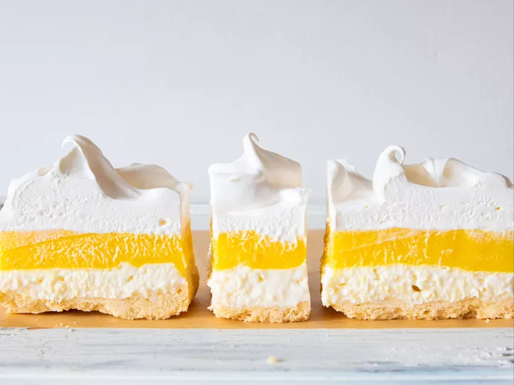

This lemon lush dessert has a shortbread crust and layers of lemon and cream cheese filling. A family friend shared this recipe with me. It's always a hit at any get-togethers.
2 cups all-purpose flour
2 (8 ounce) packages cream cheese, softened
3½ cups milk
1 cup white sugar
Step 1
Preheat the oven to 350 degrees F (175 degrees C).
Step 2
Combine flour and butter in a bowl using a pastry cutter until mixture is crumbly; press into the bottom of a 9x13-inch baking dish.
Step 3
Bake in the preheated oven until lightly golden, about 25 minutes. Cool completely, about 15 minutes.